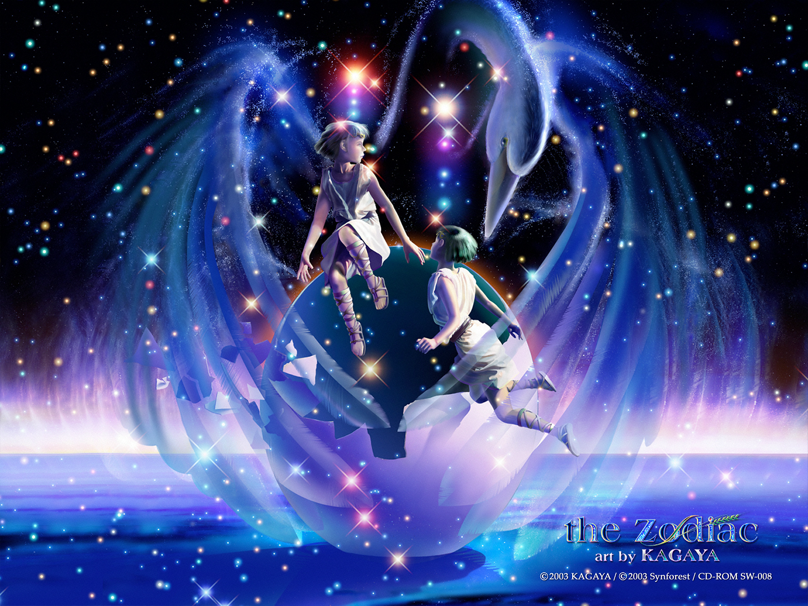
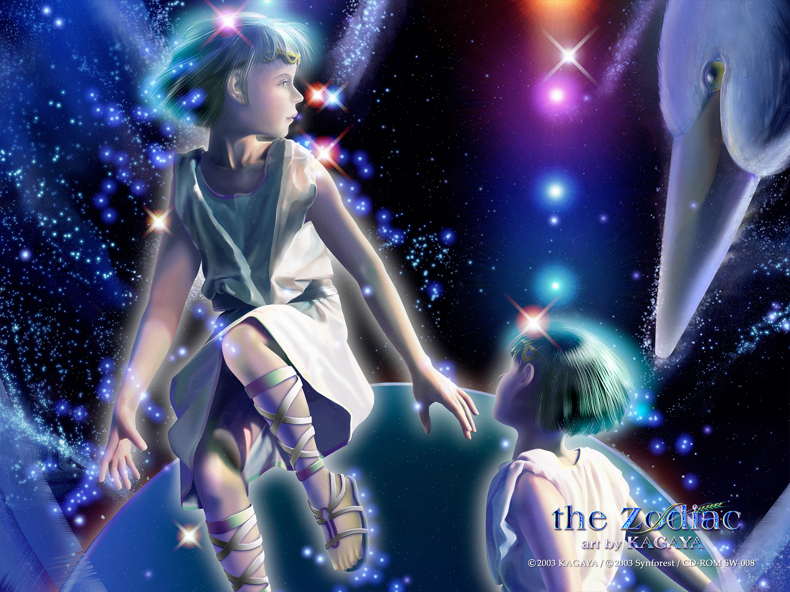
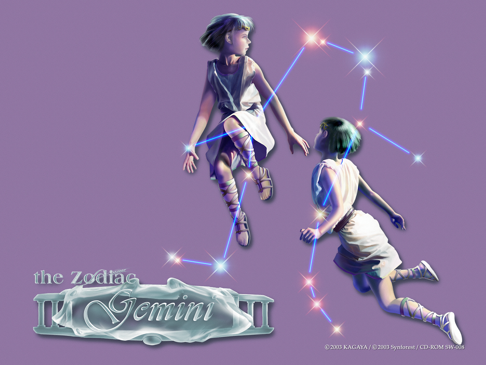
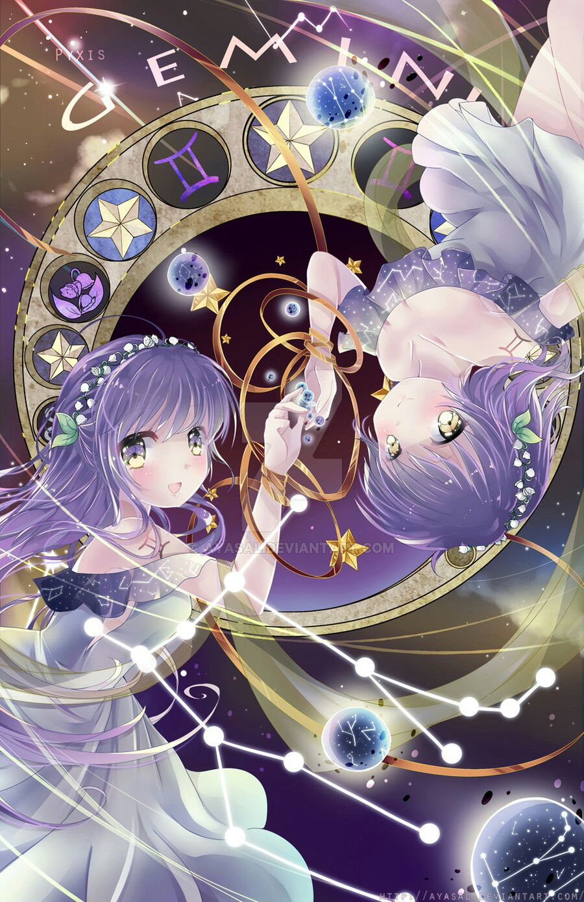

SONG TỬ
Là biểu tượng của không khí. Sao chiếu mệnh là sao Thuỷ. Tính cách nổi bật nhất là hay tự mâu thuẫn với chính mình, hay cãi bướng. Họ thường ít nói, lôi cuốn, khéo léo và ham hoạt động, nhưng đôi khi họ lại bi quan và cảm thấy mình vô dụng.
Thỉnh thoảng sự tháo vát của họ lại trở nên vô hiệu. Ví dụ, họ cảm thấy rất khó để gắn bó dài lâu với một người, một vật hay một thói quen nào đó. Họ có thể là một người yêu chung thuỷ và có tài, nhưng sự tự do và không bị ràng buộc của họ luôn ở trên hết.
Người cung Gemini rất thiếu kiên nhẫn, họ thường xuyên thay đổi những sở thích và những hoạt động của họ, và họ rất muốn có thể biết hết mọi thứ trong một thời gian ngắn. Khả năng thích nghi trong mọi tình huống của họ làm họ thêm phần hấp dẫn. Họ thích nghiên cứu những điều bí ẩn, đi du lịch, sống một cuộc sống hướng ngoại và ở trong một không gian không hạn chế. Những công việc thích hợp với người cung Gemini: chính trị gia, giám đốc, thương gia, luật sư, nhà thương thuyết.
Nhưng cũng phải nói thêm, bạn có thể sẽ gặp những Song tử mang tính cách hướng nội làm chủ đạo. Những Song tử này thường có đầu óc cực thông minh và rất ít nói. Phần lớn họ thường dùng khả năng này để khám phá thế giới nội tâm của mình thay vì khám phá thế giới như những song tử hướng ngoại. Công việc thích hợp với những Song Tử hướng nội: những công việc mang tính sáng tạo nghệ thuật, nhà văn, nhà thiết kế, đạo diễn, lập trình viên.
2, Mô tảThần dân Song Tử có bộ não tuyệt vời. Đầu óc của họ có thể chứa thông tin nhiều kinh khủng. Mọi người nghĩ họ nói toàn những thứ vớ vẩn chỉ vì họ có quá nhiều thứ để nói! Họ thường bỏ lỡ chuyến tàu hay đi nhầm đường chỉ vì lúc nào tâm trí họ cũng bận rộn suy nghĩ.
Họ hào phóng, sống tình cảm và hơi bốc đồng. Sự nhàm chán và nhàn nhã làm họ chán ghét và dễ phát điên nếu không có gì để làm. Họ thích trẻ con vì chính bản thân họ chưa bao giờ là người lớn. Nếu bạn có một người bạn Song Tử, cuộc sống của bạn sẽ luôn sôi động. Họ cũng là tay nói dóc cừ khôi đấy.
Và cũng chính vì có ít nhất 2 tính cách trong cùng 1 con người mà Song tử dường như là người rất khó đoán. Và khó có miêu tả chính xác nhất vì sự phức tạp, bạn có thể gặp 1 song tử vui vẻ hoạt bát… nói nhiều nhưng cũng chính người đó lại có thể trầm tư ít nói ngay sau đó 1/1000 giây.
3, Tính cách cơ bảnTrong thần thoại Hy Lạp, thần Mercury – sao chiếu mạng của Song Sinh – là người đưa thư nhanh nhẹn của thượng đế. Điều này có thể lý giải vì sao dân Song Sinh cực kỳ thích di chuyển, khao khát tìm kiếm tri thức và trải nghiệm.
Tò mò và cực kỳ láu lỉnh, những “đứa trẻ” này có tính cách đa dạng. Cái gì họ cũng biết, nhưng không thích chuyên sâu một lĩnh vực nào. Họ trải nghiệm mỗi thứ một ít – để hương vị cuộc sống thêm phong phú mà thôi.
Theo nhiều nhà chiêm tinh, Song Sinh nổi tiếng là những người ăn nói lém lỉnh. Nếu ai không có cái tài ấy thì họ lại là tay viết lách rất cừ hoặc rất giỏi ngoại ngữ.
Oscar Wilde từng nói: “Có một điều tệ hơn việc mọi người cứ bàn tán về bạn, đó là chẳng có ai nhắc đến bạn cả”. Và dù thích hay không, Song Sinh thường là đề tài để bàn luận và mổ xẻ, thậm chí “hạ bệ” nhất trong Hoàng Đạo. Đôi khi đó là 1 dạng ghen tỵ đầy tinh tế của các chòm,sao khác. Có lẽ do Song Sinh quá độc đáo, quá khác thường khiến người khác hiểu nhầm?
Với tư duy rộng rãi, đầy sáng tạo, sống với quan niệm “tự nhiên nhi nhiên” và say mê tự do như điếu đổ, một anh chàng Song Sinh sẽ luôn bị kích thích, khích lệ bởi những gì thay đổi, mới mẻ. Ghét cay ghét đắng sự vụn vặt, anh ta sẽ không đủ kiên nhẫn để nghe bạn kể lể đâu.
Về cơ bản, ý chí người Cung Song Tử luôn đan xen giữa hai mặt giữa tích cực và tiêu cực, giữa động và tĩnh, giữa tương hỗ và triệt tiêu, cả hai mặt cùng tồn tại và phát triển. Thường họ rất đa tài đa nghệ, cũng đồng thời có thể xử lý rất nhiều việc một lúc, có một số còn tỏ ra hai loại nhân cách hoặc thậm chí đa nhân cách một cách rõ ràng. Đặc điểm tính cách đa biến này, thường xuyên khiến người ta khó nắm bắt. Họ tương đối có linh cảm, thông minh, trí óc sôi động và nhạy bén, thích bận rộn và theo đuổi khái niệm cùng cách làm mới, rất có sức sống, tài ăn nói số một, sinh lực tràn trề, ôm ấp chí lớn, nhân duyên khá tốt, hơn nữa cũng rất có tài năng về mặt ngôn ngữ. Tư duy với sự vật sự việc rất nhanh, thay đổi kế hoạch cũng chóng vánh hơn người thường.
Do ảnh hưởng từ Sao Thủy, khiến cho người Cung Song Tử thường khó có cách nào kiểm soát khả năng suy nghĩ của chính mình, rất dễ dàng dẫn đến chứng suy nhược tâm thần.
Song Tử có sức lực và suy nghĩ hơn người khác gấp bội, do vậy thời gian “sạc” của họ của cần nhiều hơn hẳn những người khác. Bởi vậy, Cung Song Tử là Cung phức tạp vì nó gồm cả thiện và ác, vui vẻ và u sầu, hiền dịu và bạo tàn.
Người Cung Song Tử thường có một hai ưu điểm hiện rõ và một hai khuyết điểm siêu bự. Điều này khiến cho lúc mà bạn khen ngợi hay chỉ trích Song Tử đều dễ mang ra nhiều cảm xúc cùng sự khoa trương. Muốn miêu tả tính tình người Cung Song Tử đúng mực, cần bỏ thời gian sống chung với họ, mới có thể có đầy đủ bằng chứng.
Người bình thường cho rằng Song Tử là người hai mặt, do có hai tính cách. Đó chỉ là khi người ta quan sát thông thường, khả năng do thiếu góc độ quan sát hay thời gian chưa đủ dài mà dẫn đến. Song Tử “gặp người nói tiếng người, gặp quỷ nói tiếng quỷ” (ngụ ý là: đi với bụt mặc áo cà sa, đi với ma mặc áo giấy), tất nhiên do họ có khả năng ngôn ngữ rất mạnh cùng khả năng giao tiếp, đồng thời họ cũng rất hiểu giữa người và quỷ, nhưng không thể do vậy mà suy đoán họ là người hay quỷ, hoặc vừa người vừa quỷ, thậm chí nói họ chả phải người chả phải quỷ. Cũng chỉ do mọi chuyện tồn tại trong vũ trụ này họ đều có nhiều sự hiếu kỳ và khả năng lý giải hơn người thường một chút. Bởi vậy, nếu muốn hiểu rõ Song Tử thì tính tò mò và năng lực lý giải của bạn cũng đừng quá tệ.
Đoán ý qua lời nói và sắc mặt là bản lĩnh quản gia đình của người Cung Song Tử. Thêm vào đó là tài ăn nói của họ. Họ luôn rất nhanh chóng nắm bắt một cách hiệu quả tâm tư của người khác, vả lại còn biết thuyết phục đối phương.
Khuôn mặt và tay chân của người Cung Song Tử đều gọn gàng như nhau, nhưng trong sự gọn gàng lại mang rất nhiều tầng khó để bóc tách; trong cứng có mềm, mỏng nhỏ nhưng không lộn xộn. Là một nhân tài không thể thiếu của Bộ phận Quản lý và Kế hoạch của Công ty. Hơn nữa, năng lực thực thi của họ cũng rất mạnh, chỉ cần hơi không tin tưởng người khác, thà một mình tiếp nhận thách thức. Đừng nhầm lẫn rằng họ là loại người thích ôm rơm nặng bụng nhé, chỉ là họ rất vui vẻ trong việc tiếp nhận sự phỉnh nịnh đáng lẽ phải có thôi mà.
Người Cung Song Tử thích danh lợi, nhưng cũng không phải muốn được nổi tiếng như cồn, họ thích bản thân trở thành người có thực lực trong mắt người khác hơn. Họ thích làm chuyện gì cũng có thanh có sắc (tức sự sinh động), tuy không chắc phải là thứ sáng tạo khác người, nhưng cũng tuyệt đối kiên trì với phong cách độc đáo của chính mình. Họ rất vui mừng khi người thân hàng xóm gần xa đều biết mình là người hiền lành hay người có ý hợp tác, họ sẽ không để bất cứ ai khiến cho họ có cảm giác bị oan ức, khiến họ phải trông như kẻ thô tục trong bộ dạng chất phác để lừa bịp.
Người Cung Song Tử không ngần ngại trải nghiệm đau đớn để có được bài học đắt giá. Bỏ tiền mua kinh nghiệm cũng là chuyện thường thấy. Nếu trong khi họ thuyết phục bạn và đem kinh nghiệm xương máu của mình ra, nhưng bạn lại nhìn với vẻ hoài nghi, chắc chắn họ sẽ tặng bạn một câu kết: “Nếu bạn không nghe tôi, đến lúc đó sẽ nếm mùi vị, hơn nữa chết rồi vẫn chưa trả hết đâu !” do họ muốn can thiệp vào chuyện của bạn. Nhưng một khi bạn tìm họ kể khổ, họ khuyên mà bạn nghe theo, họ sẽ có một câu tiên đoán đáng sợ. Chuẩn chứ? chuyện này cần xem bạn có nghe theo hay là không thôi.
Người Cung Song Tử, dạt dào tài hoa, cùng một sức truyền cảm mạnh mẽ. Bởi vì họ giỏi trong bầu không khí trò chơi, lại gần làm thân với bạn, từ từ làm tan rã lớp phòng vệ của bạn, cùng khả năng khai phá niềm vui tiềm ẩn trong bạn.
Ham chơi, ưa hoạt động, hiếu kỳ, khiến Song Tử giống một ngọn lửa đang cháy lay động không ngừng, lúc mạnh lúc yếu, nhưng không bao giờ dập tắt. Năng lượng của họ tràn trề, nghiêm túc trong công việc, có tình nghĩa với bạn bè, tham vọng hừng hực trong sự nghiệp. Nhưng người yêu của họ, thường bị họ làm cho phải sức cùng lực kiệt, người nhà của họ cũng thường bị cảm xúc của họ làm cho hỗn độn. Tại sao vậy? Cung Song Tử không thể chịu nổi mối quan hệ nhất thành bất biến, những chuyện cố định khiến họ “lão hóa” rất nhanh, cũng khiến đối tượng bị họ yêu “lão hóa” rất nhanh nữa.
Dựa vào nhan sắc để được cưng chiều nhưng khi sắc đẹp phai tàn thì gặp sự ruồng rẫy, cái đó có thật. Đối với Song Tử mà nói, tinh thần giống như thứ nhan sắc ấy, đó là ý chí ảnh hưởng sự thành bại của con người, họ đòi hỏi bản thân, cũng đòi hỏi ở người khác. Nhưng không phải quá cứng nhắc, có lúc đòi hỏi ở bản thân có phần thoải mái, nhưng đối với người khác lại có phần nghiêm khắc.
“Có cùng mới có biến, có biến mới có thông, có thông mới được lâu bền” đó là điều Khổng Tử đã nói. Đó cũng đúng là lối xử thế của Cung Song Tử. Họ thích người “biết động não”.